Chapter 5Model Architecture
Abstract Large language models (LLMs) are advanced neural networks pre-trained on extensive text corpora. A critical aspect of developing LLMs lies in designing effective network architectures that enable the creation of powerful and scalable models. This chapter delves into the architectural foundations of LLMs, with a particular emphasis on the Transformer model, which has become the cornerstone of modern LLMs. We begin by systematically dissecting the Transformer model, examining its components in detail, and explaining how the encoder and decoder modules are constructed and integrated into a unified architecture.
Next, we provide a comprehensive overview of the key configurations that define these models, including normalization techniques, positional encoding, activation functions, attention mechanisms, and mixture-of-experts models. Building on these foundational elements, we present a complete configuration of the LLaMA model, accompanied by practical code demonstrations to illustrate its implementation.
Furthermore, we explore three prominent architectural paradigms for constructing language models: the encoder–decoder architecture, the causal decoder architecture, and the prefix decoder architecture. To address the challenges of processing long texts, we discuss strategies for extending LLMs to handle longer contexts, including scaling positional embeddings or expanding the context window.
Finally, we introduce alternative model architectures based on parameterized state space models, highlighting emerging approaches like Mamba and other variants. This chapter aims to provide a thorough understanding of the architectural principles underlying LLMs, equipping readers with the knowledge to design, implement, and adapt these models for diverse applications.
In Chap. 4, this book provides a detailed introduction to the process of preparing pre-training data. This chapter will explore the architecture of large language models
(LLMs), with a primary focus on the Transformer model (Sect. 5.1). It will also cover detailed configurations (Sect. 5.2), mainstream architectures (Sect. 5.3), long context models (Sect. 5.4), and alternative model architectures (Sect. 5.5). Table 5.1 provides detailed configurations of representative LLMs.
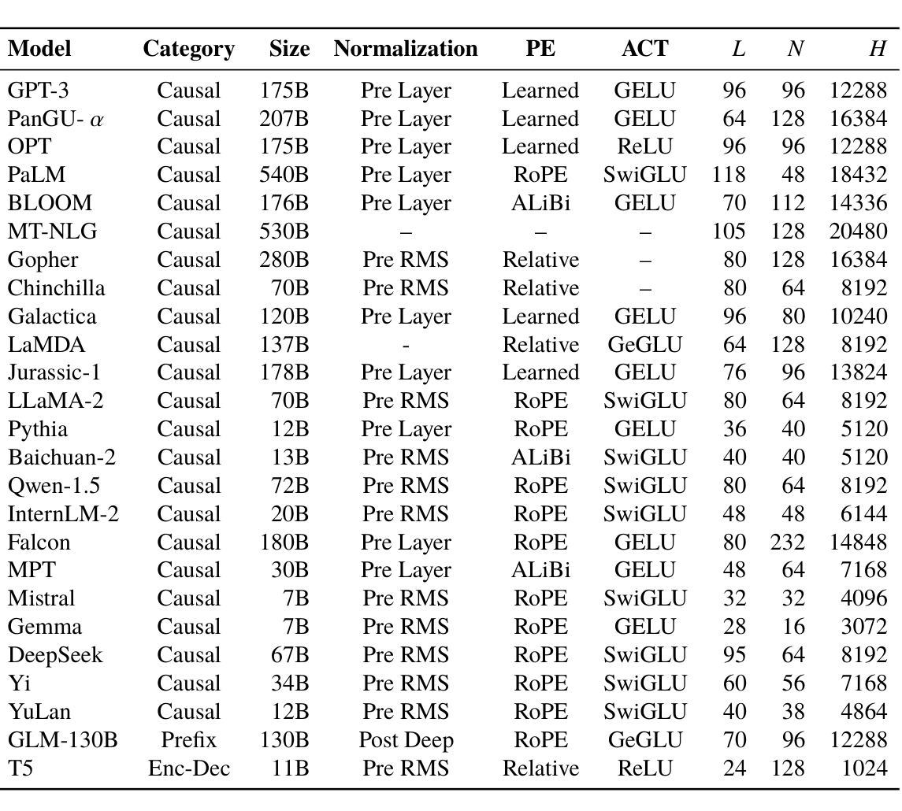
Category
Size Normalization
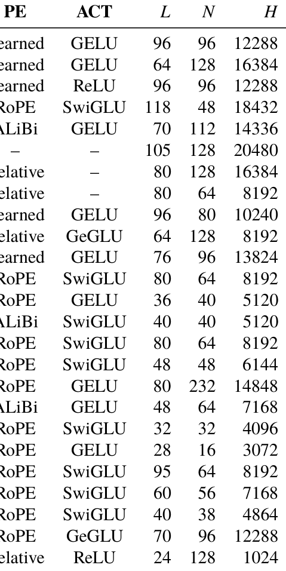
Model
Causal
Pre Layer
Learned
GELU
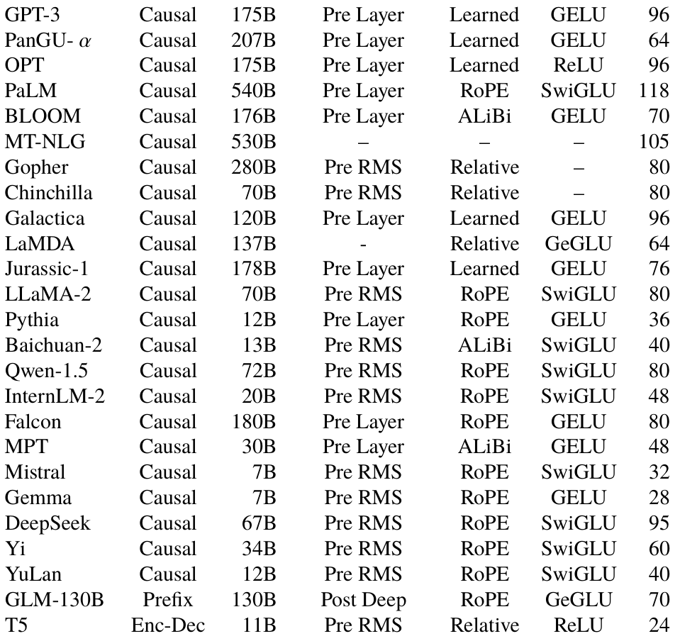
96 12288 GPT-3
175B
Causal
Pre Layer
Learned
GELU
64 128 16384
207B
Causal
Pre Layer
Learned
96 12288 OPT
175B
ReLU
Causal
Pre Layer
RoPE
SwiGLU 118
48 18432 PaLM
540B
Causal
Pre Layer
ALiBi
GELU
70 112 14336 BLOOM
176B
Causal
105 128 20480 MT-NLG
530B
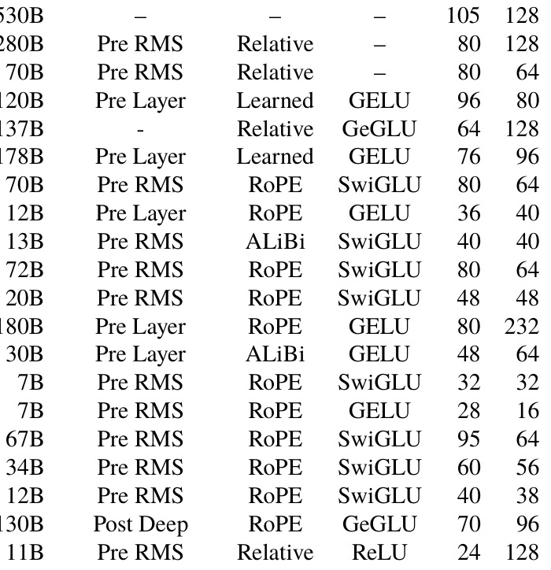
Causal
Pre RMS
80 128 16384 Gopher
280B
Relative
Pre RMS
8192 Chinchilla
Causal
Relative
Causal
Pre Layer
Learned
GELU
80 10240 Galactica
120B
Causal
Relative
GeGLU
64 128
8192 LaMDA
137B
Causal
Pre Layer
Learned
GELU
96 13824 Jurassic-1
178B
Pre RMS
RoPE
SwiGLU
8192 LLaMA-2
Causal
Pre Layer
RoPE
GELU
5120 Pythia
Causal
Baichuan-2
Pre RMS
ALiBi
SwiGLU
5120
Causal
8192
Pre RMS
RoPE
SwiGLU
Qwen-1.5
Causal
InternLM-2
Pre RMS
RoPE
SwiGLU
6144
Causal
Causal
Pre Layer
RoPE
GELU
80 232 14848 Falcon
180B
Pre Layer
ALiBi
GELU
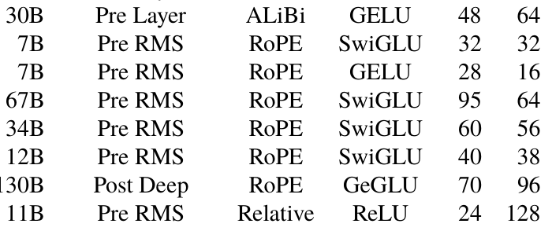
7168 MPT
Causal
Pre RMS
RoPE
SwiGLU
4096 Mistral
Causal
Pre RMS
RoPE
GELU
3072 Gemma
Causal
Pre RMS
RoPE
SwiGLU
8192 DeepSeek
Causal
Pre RMS
RoPE
SwiGLU
7168 Yi
Causal
Pre RMS
RoPE
SwiGLU
4864 YuLan
Causal
GLM-130B
Prefix
Post Deep
RoPE
GeGLU
96 12288
130B
Enc-Dec
Pre RMS
Relative
24 128
1024 T5
ReLU
5.1Transformer Models#
Most existing LLMs are currently designed and developed using the Transformer architecture. Transformer is a neural network model consisting of stacked sub-modules, including multi-head attention and feed-forward network layers. The original Transformer model is composed of two components: the encoder and the decoder, which can be
used independently. For instance, BERT employs an encoder-only architecture, while GPT-1 utilizes a decoder-only architecture. Compared to early pre-trained language models like BERT, LLMs retain the core structure of Transformer but expand primarily in the representation dimension and the number of stacked layers, leading to a substantial increase in model parameters. This section will first introduce the basic components of the Transformer model, including the input encoding layer, the multi-head attention layer, and the feed-forward network layer, followed by an introduction to the encoder and decoder components of the Transformer model.
5.1.1Input Encoding Layer#
In the Transformer model, the input token sequence (u = [u1, u2, . . . , uT].) is first transformed into a sequence of embedding vectors through an input embedding module. Specifically, to model the semantic information, each input token is mapped to a learnable token vector vt ∈ RH . in the input embedding module. Since the self-attention mechanism cannot inherently model the order of elements in the sequence, the Transformer model introduces position embedding (PE) to represent the positional information within the sequence. Given a token ut .,it will be assigned a corresponding position vector pt ∈ RH . based on its absolute position in the input. The token vector and its corresponding position vector are then directly added to obtain the input embedding representation
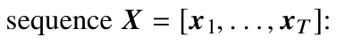
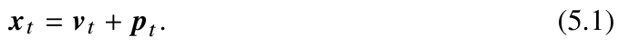
The Transformer model uses pt . to encode the positional information of tokens. Since the positional encoding is determined solely by each token’s position, this method is known as absolute positional encoding. However, constrained by the maximum length of training samples, absolute positional encoding cannot represent positions not encountered in the training data, thereby limiting the Transformer model’s ability to handle long contexts. This book will introduce various positional encoding methods in Sect. 5.2.4 and discuss long context modeling strategies in Sect. 5.4.
5.1.2Multi-Head Attention Layer#
Multi-head attention is the core mechanism of the Transformer model, enabling it to model interactions between inputs at any distance. In contrast, recurrent neural
network (RNN) iteratively updates the current state using the previous state, which can lead to gradient explosion or vanishing gradient problems when handling long sequences. Convolutional neural network (CNN) allows interactions only among tokens within the convolutional kernel, necessitating stacked convolutional layers to achieve long-distance information interaction.
A multi-head attention layer typically consists of multiple attention modules. In each attention module, the input embedding sequence is mapped to corresponding query (Q.), key (K .), and value (V .) matrices. Each query then performs a dot product with all keys, and the softmax function is used to compute the attention scores. These scores are subsequently used to compute the weighted sum of the value vectors, resulting in the final output. Formally, the above process can be expressed as:
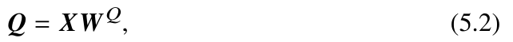
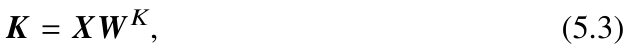
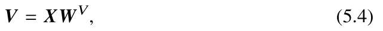
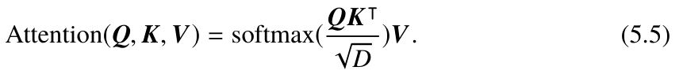
In the above formula, W Q., W K ., and WV . are the mapping matrices, and the numerical √ scaling is performed by dividing
D., where D is the dimension of the key vectors.
The multi-head attention mechanism incorporates N attention modules (attention heads), each having the same structure but different parameters. In each attention head, the input sequence is mapped into distinct sets of queries, keys, and values, and the output is computed independently. Finally, the outputs of different attention heads are then concatenated and mapped to the final output through a weight matrix W O ∈ RH×H .:
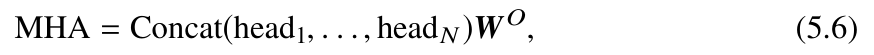
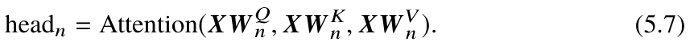
The attention mechanism can directly model relationships between any two positions in a sequence, offering superior capabilities to modeling long sequences than traditional RNN and its variants such as LSTM and GRU. Additionally, the attention computation process is well-suited for parallel computing and benefits from high-performance hardware like GPUs and TPUs, enabling the efficient optimization of large-scale Transformer models.
5.1.3Feed-Forward Network Layer#
To model complex mapping relationships, the Transformer model incorporates a feed-forward network (FFN) layer, which applies nonlinear transformations to the embedding sequence. Specifically, given an input x ∈ RH ., the FFN layer in the Transformer consists of two linear transformations and a nonlinear activation function:
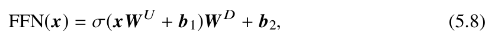
where WU ∈ RH×H . and W D ∈ RH ×H . are the linear transformation weight matrices, respectively, b1 ∈ RH . and b2 ∈ RH . are the bias terms, and σ. is the activation function (with ReLU used in the original Transformer). The FFN layer introduces the nonlinear transformation through the activation function, thereby enhancing the model’s ability to represent complex data and capture intricate interaction relationships.
5.1.4Encoder#
In the Transformer model, the role of the encoder (Fig. 5.1a) is to encode each input token into a contextualized embedding. The encoder is composed of stacking multiple identical layers, each containing an MHA module and an FFN module. Additionally, layer normalization and residual connections are applied after the attention and FFN modules to enhance training stability. Specifically, the residual connection adds the input to the layer’s output, facilitating information flow across different layers and mitigating issues such as gradient explosion or vanishing, while layer normalization (LayerNorm) rescales the output of each module to enhance the stability of the model’s training (see Sect. 5.2.1 for more details).
The encoder takes as input a sequence of token embeddings X. that have been integrated with positional encoding. It models contextual semantic information through multiple stacked encoding layers to generate the encoded representation for the given input. The attention module in the encoder typically employs bidirectional attention, allowing all input embeddings to be fully visible to each other. This enables the token
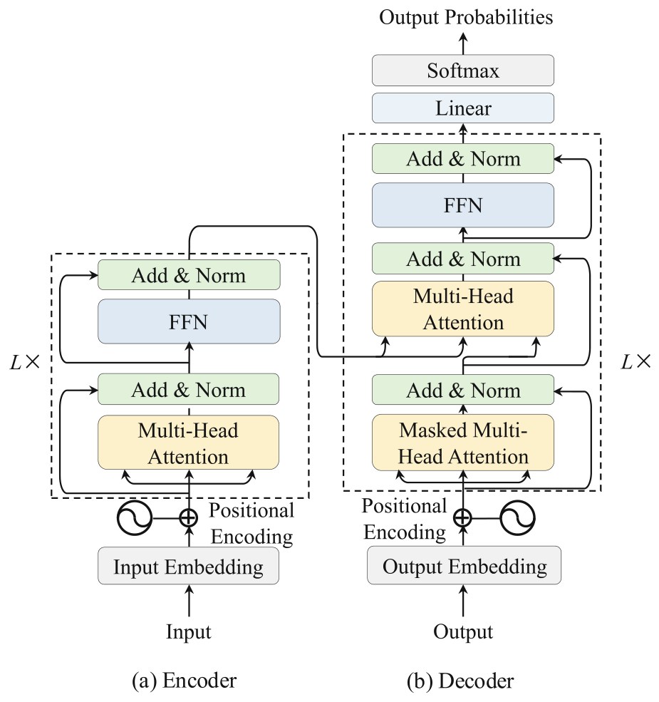
representations at each position to aggregate semantic information from the entire context. Formally, the computation in the l-th layer (l ∈ {1, . . . , L}.) of the encoder is as follows:
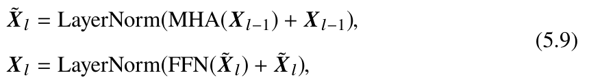
where Xl-1. and Xl. represent the input and output of the Transformer layer, respectively, while ˜Xl. denotes the intermediate representation of the input after passing through the multi-head attention module within this layer.
5.1.5Decoder#
The decoder in the Transformer architecture (Fig. 5.1b) generates subsequent content based on the last layer’s outputs of the encoder and the already generated token sequence. Unlike the encoder, the decoder incorporates the masking mechanism during attention
computation to prevent future information from being leaked while generating the target sequence. Additionally, the decoder introduces a cross-attention module to enable the hidden states X L. to focus on the output from the encoder (Eq. 5.9). Similar to the encoder, each module in the decoder also uses layer normalization and residual connections. After the decoder, the model maps its output to a probability distribution over the target vocabulary through a fully connected layer. It can then generate a token sequence by applying specific decoding strategies. During training, the decoder can process the input and target sequences in parallel. However, during generation, the decoder must generate the entire target sequence step by step in an autoregressive manner (see Chap. 9 for more details). The computation process in the decoder is as follows:
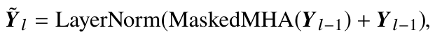
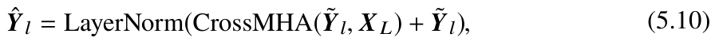
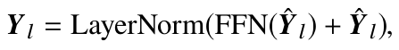
where Yl-1. and Yl. represent the input and output of the decoder layer, respectively, while ˜Yl. and ˆYl. are the intermediate representations of the input after passing through the masked multi-head attention module ( MaskedMHA.) and multi-head cross-attention module ( CrossMHA.), respectively. Subsequently, the output of the final layer, Y L., is mapped to the dimension of the token vocabulary:
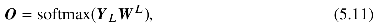
where O ∈ RT×V . represents the final output of the model (V denotes the size of the vocabulary), indicating the probability distribution of the next token over the vocabulary. The matrix W L ∈ RH×V . is the parameter matrix for mapping.
5.2Detailed Configuration#
Based on the Transformer model [10], researchers have proposed various improvements in training stability, model performance, and computational efficiency. This section introduces the configurations of the four core modules of the Transformer model— normalization, activation functions, positional encoding, and attention mechanisms— along with the mixture-of-experts structure. Finally, the implementation of the LLaMA model will be demonstrated through code examples.
5.2.1Normalization Methods#
LLMs often encounter issues with the unstable training loss during pre-training. To alleviate this issue, normalization methods are widely used to improve the stability of the training process. The original Transformer model primarily employs layer normalization (LayerNorm or LN) [146], while several improved normalization methods have emerged, such as Root Mean Square Layer Normalization (RMSNorm) [147] and DeepNorm [148]. The following part provides a detailed introduction to these methods.
- LayerNorm. In earlier work, batch normalization (BN) [149] is a widely adopted normalization method. However, it is not effective for handling sequence data with variable length or small batch sizes. To address this, researchers introduce layer normalization [146], which performs normalization layer by layer. Specifically, layer normalization calculates the mean μ. and variance σ. of all activation values within each layer and then adjusts the activations’ center and scaling factor:
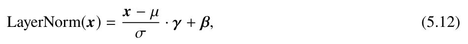
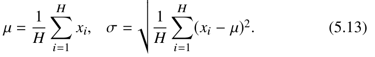
- RMSNorm. RMSNorm [147] scales the activation using the root mean square RMS(·). on the activation values. Transformer models using RMSNorm show certain advantages in both training speed and performance compared to models trained with LayerNorm. Early representative models, such as Gopher [114] and Chinchilla [19], both employ RMSNorm. The computation formula is as follows:
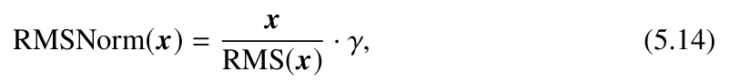
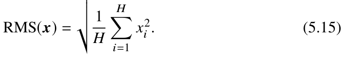
class LlamaRMSNorm(nn.Module):
def __init__(self, hidden_size, eps=1e-6):
super().__init__()
self.weight = nn.Parameter(torch.ones(hidden_size))
self.variance_epsilon = epsThe following provides the implementation code for RMSNorm in LLaMA from the Huggingface Transformers codebase:
def forward(self, hidden_states):
input_dtype = hidden_states.dtype
hidden_states = hidden_states.to(torch.float32)
# Calculate the root mean square of the hidden states
variance = hidden_states.pow(2).mean(-1, keepdim=True)
# Rescale the hidden states after dividing by their root mean square hidden_states = hidden_states * torch.rsqrt(variance +
self.variance_epsilon)return self.weight * hidden_states.to(input_dtype)→
- DeepNorm. To further stabilize the training of deep Transformers, DeepNorm [148] enhances LayerNorm by scaling the activation values x. through a certain proportion α. within the residual connections. This approach supports greater depth expansion. The computational formula is as follows:
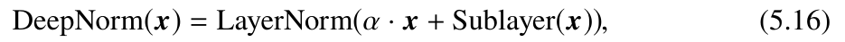
where Sublayer. denotes the FFN or attention module within a Transformer layer. For example, GLM-130B [150] employs DeepNorm in its architecture.
5.2.2Normalization Position#
The position of normalization modules also has a significant impact on training
As shown in Fig. 5.2a, there are typically three options for the position of stability.
normalization modules: post-layer normalization (Post-Norm), pre-layer normalization (Pre-Norm), and sandwich-layer normalization (Sandwich-Norm).
- Post-Norm. The vanilla Transformer model employs the Post-Norm technique, which places the normalization module after the residual connection. The calculation formula is given by:
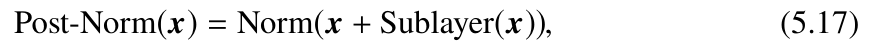
where Norm. represents any normalization method. In principle, Post-Norm offers several advantages. First, it helps accelerate the convergence speed of neural network training and prevents issues like gradient explosion or gradient vanishing, thereby reducing training time. Second, Post-Norm can decrease the sensitivity of the neural network to hyperparameters (such as learning rate and initialization parameters), making the network easier to tune. However, due to the potentially large gradients near the input layer, Post-Norm can sometimes result in training instability [151]. Consequently, in existing LLMs, Post-
Norm is typically combined with other strategies. For example, GLM-130B employs both Post-Norm and DeepNorm.
- Pre-Norm. Unlike Post-Norm, Pre-Norm [152] applies the normalization module before each sublayer. The computational formula is as follows:
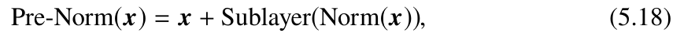
where Norm. refers to any normalization method. Pre-Norm introduces a normalization module before each sublayer, normalizing only the input representations fed into each module, which can help alleviate issues of gradient explosion or gradient vanishing. Additionally, Pre-Norm adds an extra LayerNorm after the final Transformer layer. Although it might be slightly less performant than Post-Norm, Pre-Norm provides greater stability during training. As a result, most mainstream LLMs use Pre-Norm.
- Sandwich-Norm. Building on Pre-Norm, Sandwich-Norm [153] introduces an additional LayerNorm before residual connection, primarily to prevent numerical explosion in the outputs of Transformer layers. It is implemented as follows:
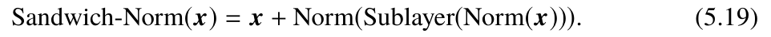
Essentially, Sandwich-Norm can be seen as a combination of the Pre-Norm and Post- Norm methods, theoretically offering better normalization effects. However, researchers have found that Sandwich-Norm sometimes fails to ensure stable training of LLMs and may even result in training collapse issues [150].
5.2.3Activation Function#
In FFN, the choice of activation function is crucial to the performance of LLMs. Typically, activation functions are used to introduce non-linear transformations in neural networks, thereby enhancing the model’s capacity. The vanilla Transformer architecture employs the ReLU (Rectified Linear Unit) activation function, which is computationally simple. Its specific form is as follows:
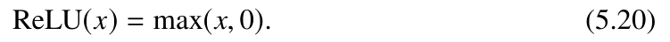
However, ReLU may lead to the issue of inactive neurons, where neurons set to 0 fail to learn useful information. To address it, researchers have explored variants of the ReLU function to achieve better performance. The Swish activation function multiplies
neurons by their sigmoid activated outputs. GELU (Gaussian Error Linear Unit) [154] uses the standard Gaussian cumulative distribution function as the activation function and is widely used in existing Transformer models. Compared to the ReLU function, these new activation functions generally offer better convergence and performance. The comparison of Swish and GELU with ReLU is illustrated in Fig. 5.2b. The mathematical forms of Swish and GELU are given by the following equations:
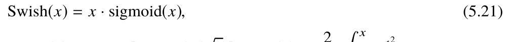
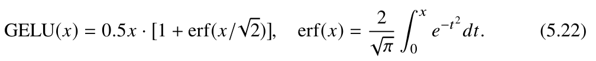
In addition to the activation functions mentioned above, LLMs (such as PaLM and LaMDA) frequently use GLU (Gated Linear Unit) and its variants [155] as activation functions, including SwiGLU and GeGLU. These methods introduce gating mechanisms into existing activation functions, often resulting in better performance [156]. The computation formulas for the SwiGLU and GeGLU activation functions are as follows:
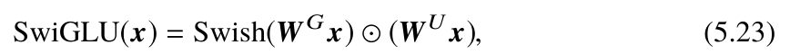
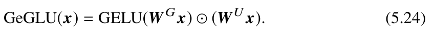
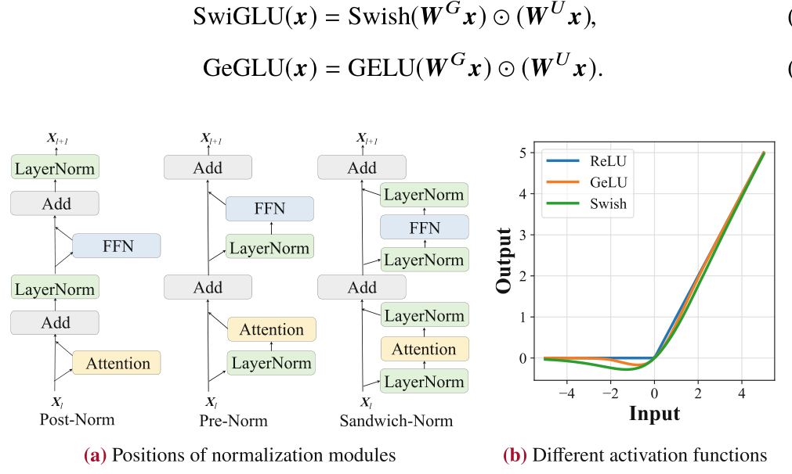
5.2.4Position Encoding#
Due to the permutation invariance of the attention mechanism in Transformer models, sequential relationships within the data cannot be directly captured using the attention mechanism alone. To address this issue, position embeddings (PE) are introduced to
model the sequence information, which integrate either absolute or relative positional information into the model.
- Absolute position encoding. To capture sequential information in input data, the vanilla Transformer model uses absolute position encoding. Specifically, position embeddings are generated based on the absolute positions of tokens in the sequence, and these embeddings are added to the input token embeddings of both the encoder and decoder to inject positional information. The formula for absolute position encoding is as follows:
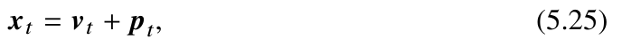
where pt . represents the position embedding at position t, and vt . is the embedding corresponding to the token at that position. The vanilla Transformer uses sine and cosine functions for position encoding, with distinct sine and cosine functions predefined for different dimensions. The absolute position is then fed into these functions to compute the corresponding position encoding. For a position embedding with dimensionality H, the value for dimension i ∈ {1, . . . , H}. is set as follows:
⎧⎪⎪⎪⎨
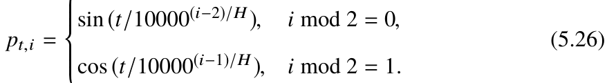
⎪⎪⎪⎩
Additionally, absolute position encoding can also use learnable embedding representations, which have been widely adopted by early pre-trained language models (e.g., BERT).
- Relative position encoding. Unlike absolute position encoding, which is typically applied only at the input layer, relative position encoding is computed at each layer based on the offset between keys and queries. It is usually used to adjust attention scores rather than being added to the token embeddings. To highlight the differences and connections between these two approaches, we decompose the calculated attention score in the model’s first layer, using absolute position encoding as an example:
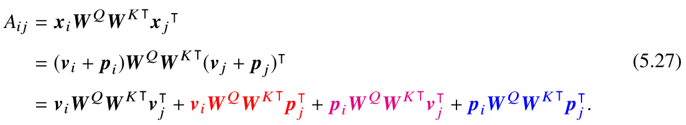
.
In contrast to the methods mentioned above, Transformer-XL [157] incorporates relative positional information when computing the attention scores between keys and queries. The specific formula is as follows:
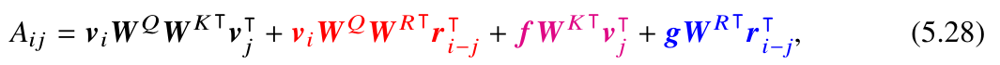
where ri-jW R. represents the relative position encoding, and f. and g. are parameters representing the global information. Compared to absolute position encoding, in the second and fourth terms of the attention values, the absolute position encoding pjW K . corresponding to keys is replaced by the relative position encoding ri-jW R. to incorporate the relative positional information; while in the third and fourth terms, the global parameters f. and g. replace the absolute position encoding piW Q. corresponding to queries, which are used to measure the importance of the keys and relative positional information, respectively.
As another representative method, T5 [67] introduces a simplified relative position encoding called T5 bias. Specifically, it incorporates learnable scalars into the attention scores, which are computed based on the position distances between the queries and keys. Compared to absolute position encoding, Transformer models that use relative position encoding can generally model longer texts than those seen during training, exhibiting a certain degree of length extrapolation ability [158]. The calculation of T5 relative position encoding can be expressed as:
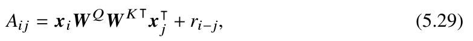
where ri-j . represents a learnable scalar based on the offset between queries and keys. Note that relative position encoding needs to be applied to every layer of the Transformer model. For simplicity, we will use xi. to denote the input representation of each layer in the following discussion.
- Rotary position embedding (RoPE). RoPE utilizes rotation matrices, derived from absolute positional information, to represent relative positional information in attention. It assigns a unique rotation matrix to each absolute position in the sequence and multiplies it with the queries and keys. Formally, the rotation matrix corresponding to the position index t is as follows: ⎡⎢⎢⎢⎢⎢⎢⎢⎢⎢⎢⎢⎢⎢⎢⎢⎢⎢⎢⎣ ⎤⎥⎥⎥⎥⎥⎥⎥⎥⎥⎥⎥⎥⎥⎥⎥⎥⎥⎥⎦
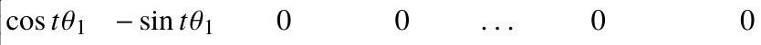
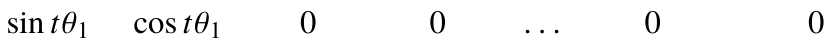
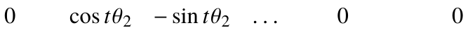
0
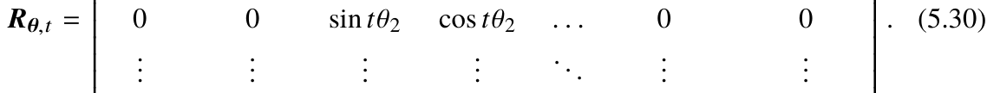
0
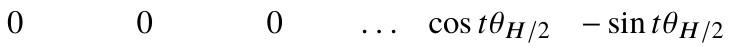
0
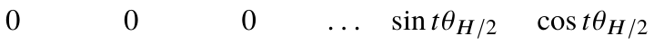
0
Based on the properties of trigonometric functions, the product of the rotation matrix with index i and the transpose of the rotation matrix with index j is equivalent to the rotation matrix with index corresponding to the relative distance i - j., i.e., Rθ,i Rθ, j = Rθ,i-j . In this way, relative positional information can be incorporated into the attention scores, with the computation formula as follows:
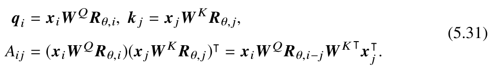
According to the definition of the rotation matrix, RoPE treats every pair of consecutive elements as a subspace when processing query and key vectors.
As a result, for a vector of length H, H/2. subspaces will be formed. In these subspaces, each subspace i ∈ 1, . . . , H/2. corresponds to two elements that are rotated by a specific angle t · θi., where t represents the position index, and θi. denotes the rotation basis in that subspace. Similar to sinusoidal positional encoding [10], RoPE defines the rotation basis θi. as an exponent of the base b (with the default value of 10000):
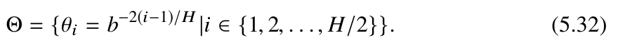
Furthermore, each subspace defines a wavelength λi., which is the distance required to complete one full cycle (2π.) rotation in that subspace:
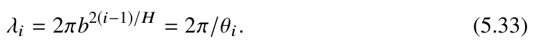
def rotate_half(x):
# Treat every two elements of the vector as a subspace
x1 = x[..., : x.shape[-1] // 2]
x2 = x[..., x.shape[-1] // 2 :]
return torch.cat((-x2, x1), dim=-1)
def apply_rotary_pos_emb(q, k, cos, sin, position_ids):
# Get the cosine values of rotations in each subspace
cos = cos[position_ids].unsqueeze(1)
sin = sin[position_ids].unsqueeze(1)
# Rotate each subspace by a specific angle
q_embed = (q * cos) + (rotate_half(q) * sin)
k_embed = (k * cos) + (rotate_half(k) * sin)
return q_embed, k_embedDue to its strong performance and long-term decay properties, RoPE is widely adopted in LLMs, such as PaLM [107] and LLaMA [46]. Below is the implementation code of RoPE for LLaMA from the Transformers library:
- ALiBi position encoding. ALiBi [158] is a specialized form of relative positional encoding designed to enhance the length extrapolation capability of Transformer models. Specifically, ALiBi introduces a penalty factor proportional to the relative distance to adjust the attention scores in the original attention computation formula:
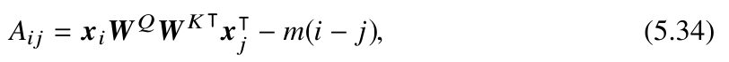
def build_alibi_tensor(attention_mask: torch.Tensor, num_heads: int, dtype: torch.dtype) -> torch.Tensor:batch_size, seq_length = attention_mask.shape
# Calculate the penalty coefficients for each head
closest_power_of_2 = 2 ** math.floor(math.log2(num_heads))
base = torch.tensor(
2 ** (-(2 ** -(math.log2(closest_power_of_2) - 3))),
device=attention_mask.device, dtype=torch.float32)
powers = torch.arange(1, 1 + closest_power_of_2,
device=attention_mask.device, dtype=torch.int32)slopes = torch.pow(base, powers)
if closest_power_of_2 != num_heads:
# If the number of heads is not a power of 2, modify the penalty
coefficientextra_base = torch.tensor(where i - j. is the positional offset between the query and key, and m is a unique penalty coefficient for each attention head. Unlike the relative positional encodings in models such as T5 [67], the penalty scores in ALiBi are preset and do not require additional training parameters. ALiBi exhibits excellent compatibility for length extrapolation and can effectively model text that exceeds the context window length for training. The following code presents the implementation of ALiBi in the BLOOM model from the Transformers library: → → → →
2 ** (-(2 ** -(math.log2(2 * closest_power_of_2) - 3))),
device=attention_mask.device, dtype=torch.float32)
num_remaining_heads = min(closest_power_of_2, num_heads -
closest_power_of_2)extra_powers = torch.arange(1, 1 + 2 * num_remaining_heads, 2,
device=attention_mask.device, dtype=torch.int32)slopes = torch.cat([slopes, torch.pow(extra_base, extra_powers)],
dim=0)# Calculate relative distance
arange_tensor = ((attention_mask.cumsum(dim=-1) - 1) *
attention_mask)[:, None, :]# Calculate the attention bias applied by ALiBi
alibi = slopes[..., None] * arange_tensor
return alibi.reshape(batch_size * num_heads, 1, seq_length).to(dtype)→ → → → →
5.2.5Attention Mechanism#
The attention mechanism is a core component of the Transformer architecture, enabling it to model interactions between tokens in the input sequence and aggregate semantic information from various positions. Below are details of four commonly used attention mechanisms.
- Full attention. In the original Transformer model, the attention mechanism captures the semantics of sequence data in a pairwise way, considering the interactions between all tokens in the sequence. During the calculation of attention scores, each token attends to all preceding tokens, resulting in a computational complexity of O(T2). for a sequence of length T. Additionally, Transformer introduces multi-head attention, which projects queries, keys, and values into different semantic spaces through linear transformations and then aggregates the outputs of each head to form the final output. For a detailed introduction to full attention, please refer to Sect. 5.1.2.
- Sparse attention. Although the full attention mechanism offers strong modeling capability, it incurs quadratic computational complexity. To address this, researchers have proposed several efficient attention variants. Among them, sliding window attention is a widely adopted sparse attention method in LLMs. Unlike the full attention mechanism, this method sets a window of length w, and for each token ut ., it only focuses on the tokens within its corresponding window [ut-w+1, . . . , ut]. using a masking mechanism, thereby reducing the complexity to O(wT). Moreover, through layer-wise information
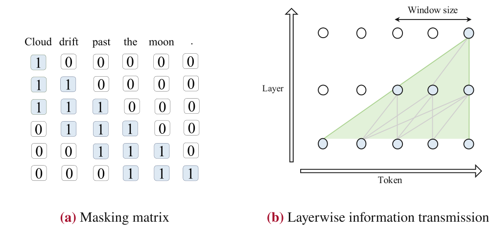
propagation, the model’s receptive field grows linearly with the number of layers, enabling it to acquire information from distant tokens. Figure 5.3 illustrates the sliding window attention mechanism.
- Multi-query/Grouped-query attention. To improve the efficiency of the attention mechanism, multi-query attention (MQA) proposes sharing the same key and value transformation matrices among different heads [159]. This approach increases the computational speed by reducing memory access, with relatively small impact on model performance (see Sect. 9.2.1). Representative LLMs using MQA include PaLM [107] and StarCoder [86]. To combine the efficiency of MQA with the performance of multi-head attention, researchers further propose the grouped-query attention mechanism (GQA) [160]. GQA divides all heads into several groups, with heads in the same group sharing the same transformation matrices, effectively balancing efficiency and performance. The LLaMA- 2 model employs the GQA mechanism. Figure 5.4 illustrates the differences between these two attention mechanisms and the standard multi-head attention mechanism.
- Hardware optimization. In addition to algorithmic improvements, the efficiency of attention modules and memory consumption can be optimized at the system level. Two prominent works in this area are FlashAttention [161] and PagedAttention [162]. FlashAttention improves the efficiency of attention score calculations by using matrix block computation and reducing memory read-write operations. In contrast, PagedAttention optimizes key-value cache (KV Cache) storage during the decoding phase, enhancing computational efficiency. These techniques will be discussed in detail in Sect. 9.2.2.
5.2.6Mixture of Experts Model#
As discussed in Sect. 2.2, LLMs can improve performance by increasing the number of parameters. However, scaling up model parameters also leads to higher computational costs. To mitigate this issue, researchers have introduced the mixture-of-experts (MoE) architecture by leveraging sparse activation in LLMs (Fig. 5.5). This approach allows for a significant increase in model parameters without a corresponding rise in infernece cost.
In the MoE architecture, each MoE layer contains K expert components, denoted as [E1, E2, . . . , EK ]., where each expert component Ei. is a FFN module. For each input token embedding xt ., the model calculates its weights for each expert through a routing network (also known as a gating function) G. In the routing process, the token’s scores for K experts are first computed through a linear transformation with a weight matrix W G ∈ RH×K ., and the top k experts with the highest scores are selected for activation.
The scores of these selected experts are then passed through a softmax function to compute their respective weights G(xt) = [G(xt)1, . . . , G(xt)k]., while the weights of unselected experts are set to 0. The computation process of the above routing network is as follows:
Finally, the weighted sum of the outputs from the selected experts will serve as the final output ot . of the mixture of experts layer:
class MoeLayer(nn.Module):
def __init__(self, experts: List[nn.Module], gate: nn.Module,
num_experts_per_tok: int):
super().__init__()
assert len(experts) > 0
# List of all experts
self.experts = nn.ModuleList(experts)
# Routing network
self.gate = gate
# Number of experts selected per token
self.num_experts_per_tok = num_experts_per_tok
def forward(self, inputs: torch.Tensor):
gate_logits = self.gate(inputs)
# Select the top-k experts using the routing network
weights, selected_experts = torch.topk(gate_logits,
self.num_experts_per_tok)
# Calculate the weights of the selected experts
weights = F.softmax(weights, dim=1,
dtype=torch.float).to(inputs.dtype)results = torch.zeros_like(inputs)
# The final output is the weighted sum of the outputs of each expert for i, expert in enumerate(self.experts):
batch_idx, nth_expert = torch.where(selected_experts == i)
results[batch_idx] += weights[batch_idx, nth_expert, None] *
expert( inputs[batch_idx]
)
return resultsAs a representative MoE model, Mixtral (8×.7B) sets eight experts (7B parameters each) at each layer, selecting two experts for each token for subsequent computations (resulting in an activation parameter of 13B). This approach leads to significant improvements in model performance. Below is an example of code for the Mixtral MoE layer: → →
5.2.7Detailed Configuration of LLaMA#
Based on the discussion in this section, we offer the following recommendations for model configuration. First, to enhance training stability, we advise using pre-layer RMSNorm as the normalization method. Second, when selecting activation functions, it is recommended to prioritize SwiGLU or GeGLU for improving model performance. Finally, for positional encoding, RoPE or ALiBi is recommended, as these positional encoding methods typically perform well in modeling long sequence data.
class LlamaModel(LlamaPreTrainedModel):
def __init__(self, config: LlamaConfig):
super().__init__(config)
# The vocabulary size of LLaMA
self.vocab_size = config.vocab_size
# The word embedding matrix of LLaMA, transforming the input id
sequence into a sequence of token embeddingsself.embed_tokens = nn.Embedding(config.vocab_size,
config.hidden_size, self.padding_idx)# All Transformer decoder layers
self.layers = nn.ModuleList(
[LlamaDecoderLayer(config, layer_idx) for layer_idx in
range(config.num_hidden_layers)])
self.norm = LlamaRMSNorm(config.hidden_size,
eps=config.rms_norm_eps)causal_mask = torch.full(
(config.max_position_embeddings,
config.max_position_embeddings), fill_value=True,Next, we will introduce the specific implementation of the decoder model architecture and the forward computation process using the LLaMA model’s code to enhance the reader’s understanding of the configurations discussed earlier in this chapter. The LLaMA model first converts the input token sequence into a sequence of token embeddings, processes it through L decoder layers, and finally, applies RMSNorm for normalization to produce the final output. The overall implementation of LLaMA in the Transformers library is as follows: → → → →
dtype=torch.bool
)
@add_start_docstrings_to_model_forward(Llama_INPUTS_DOCSTRING)
def forward(
self,
input_ids: torch.LongTensor = None,
attention_mask: Optional[torch.Tensor] = None,
position_ids: Optional[torch.LongTensor] = None,
**kwargs,) -> Union[Tuple, BaseModelOutputWithPast]:
if inputs_embeds is None:
# Transform the input id sequence into a token embedding
sequence inputs_embeds = self.embed_tokens(input_ids)
# Create an attention mask matrix for unidirectional attention
causal_mask = self._update_causal_mask(attention_mask,
inputs_embeds)hidden_states = inputs_embeds
for decoder_layer in self.layers:
# Map the hidden states of the tokens using LLaMA decoder layers hidden_states = decoder_layer(
hidden_states,
attention_mask=causal_mask,
position_ids=position_ids,
)[0]
# Normalize each token's hidden state using RMSNorm
hidden_states = self.norm(hidden_states)
return BaseModelOutputWithPast(
last_hidden_state=hidden_states,
)class LlamaDecoderLayer(nn.Module):
def __init__(self, config: LlamaConfig, layer_idx: int):
super().__init__()
self.hidden_size = config.hidden_size
# Attention layer
self.self_attn = LlamaAttention(config=config, layer_idx=layer_idx) # Feed-forward network layer
self.mlp = LlamaMLP(config)
# RMSNorm before the attention layer and feed-forward network layer self.input_layernorm = LlamaRMSNorm(config.hidden_size,
eps=config.rms_norm_eps)self.post_attention_layernorm = LlamaRMSNorm(config.hidden_size,
eps=config.rms_norm_eps)def forward(
self,
hidden_states: torch.Tensor,
attention_mask: Optional[torch.Tensor] = None,
position_ids: Optional[torch.LongTensor] = None,→ → In each decoder layer, the hidden states are first normalized using RMSNorm before being fed into the attention module. The output of the attention module is then connected to the pre-normalized hidden states via a residual connection, followed by a subsequent use of RMSNorm before being sent into the FFN layer. Similarly, the output of the FFN layer also undergoes a residual connection and serves as the output of the decoder layer. The implementation of an LLaMA layer in the Transformers library is shown below: → →
**kwargs,
) -> Tuple[torch.FloatTensor, Optional[Tuple[torch.FloatTensor,
torch.FloatTensor]]]:residual = hidden_states
# Use RMSNorm for normalization before the attention layer
hidden_states = self.input_layernorm(hidden_states)
# Perform calculations in the attention module
hidden_states, self_attn_weights, present_key_value =
self.self_attn( hidden_states=hidden_states,
attention_mask=attention_mask,
position_ids=position_ids,
**kwargs,
)
# Residual connection
hidden_states = residual + hidden_states
residual = hidden_states
# Use RMSNorm for normalization before the feed-forward network
layerhidden_states = self.post_attention_layernorm(hidden_states)
# Perform calculations in the feed-forward network layer
hidden_states = self.mlp(hidden_states)
# Residual connection
hidden_states = residual + hidden_states
outputs = (hidden_states,)
return outputs→ → →
5.3Mainstream Architectures#
In the era of pre-trained language models, the “pre-training + fine-tuning” learning paradigm is widely adopted in the NLP field, leading to the emergence of large-scale pre-trained language models with different architectures: encoder-only architectures represented by BERT, decoder-only architectures exemplified by GPT-1/2, and encoderdecoder architectures such as T5. Following the success of the GPT models, this field has transitioned into the era of generative language models, where the decoder-only architecture has become the mainstream approach for LLMs. Furthermore, the decoder-only architecture can be categorized into two variants: the causal decoder architecture and the prefix decoder architecture. It is important to note that the term decoder-only architecture generally refers to the causal decoder architecture in academic literature. Figure 5.6 provides a comparison of these three architectures.
5.3.1Encoder–Decoder Architecture#
The encoder–decoder architecture is a classic model structure in the NLP field, widely used in tasks such as machine translation and text summarization. The vanilla Transformer model also adopts this architecture, consisting of an encoder and a decoder (for a detailed introduction, see Sect. 5.1). As shown in Fig. 5.6, the encoder–decoder architecture employs a bidirectional attention mechanism on the encoder module to encode input information. In the decoder module, it utilizes cross-attention and masked attention mechanisms to generate target text autoregressively. In the early stages, pre-trained language models based on the encoder-decoder design, such as T5 [67], demonstrate excellent performance in various natural language understanding and generation tasks. However, currently, only a few LLMs, such as FLAN-T5 [30], adopt the encoder–decoder architecture.
5.3.2Causal Decoder Architecture#
To date, LLMs primarily adopt a causal decoder architecture. The causal decoder is based on the Transformer decoder with two major modifications. First, the causal decoder does not explicitly distinguish between input and output segments. As shown in Fig. 5.6, this architecture employs a unidirectional masked attention mechanism, allowing each input token to attend only to preceding tokens and itself, and generates output text in an autoregressive manner. Moreover, since it does not include an encoder, the causal decoder
removes the cross-attention module that attends to encoder representations. Instead, the token representations after the attention module are directly fed into the FFN module. The GPT models released by OpenAI adopt the causal decoder architecture. Notably, GPT-3 expands the model parameters to the hundreds of billions and demonstrates zero-shot and few-shot learning capabilities. Following the success of GPT-3, the causal decoder has been widely used in various LLMs, including BLOOM, LLaMA, and Mistral.
5.3.3Prefix Decoder Architecture#
The prefix decoder architecture, also known as the non-causal decoder architecture, modifies the masking mechanism of the causal decoder. Similar to the causal decoder, the prefix decoder also only uses decoder components. However, it is inspired by the encoderdecoder design and applies special strategies to the input and output parts, respectively. As shown in Fig. 5.6, the prefix decoder uses bidirectional attention to encode the input (prefix) part, while employing unidirectional masked attention for the output part to perform autoregressive predictions based on each token and its predecessors. The prefix decoder can also be adapted from existing causal decoders through continued pre-training, which accelerates the training of the model. For example, U-PaLM [163] is derived from continued pre-training PaLM [107]. Currently, representative LLMs based on the prefix decoder architecture include GLM-130B and U-PaLM.
5.4Long Context Models#
In practical applications, the capability of LLMs to handle long text data is increasingly essential, particularly in scenarios such as long document analysis and retrieval-augmented generation. In these cases, the text length that the model needs to process may exceed the predefined context window size. For instance, LLaMA-2 has a context window limit of 4096 tokens. To support long text processing, LLMs (or APIs) with extended context windows have been developed. For example, OpenAI released GPT-4 Turbo with a 128K context window, while Anthropic launched Claude-2.1 with a 200K context window. During pre-training, it is typical to set a limited context window size. To handle longer text data, it is necessary to extend the context window of LLMs. This research problem
has garnered significant attention from the academic community. Currently, the research on enhancing the long text modeling capability of LLMs mainly focuses on two directions: scaling positional encodings and adapting context window. This section will introduce these two methods and discuss the text data required for training long context models.
5.4.1Scaling Positional Encodings#
For Transformer-based LLMs, the context modeling capability is often constrained by the length distribution of the training corpus. If the text length exceeds this distribution range, the model’s positional encoding may not be sufficiently trained, leading to the performance degradation when handling long texts. Therefore, when an LLM encounters text inputs that exceed the maximum training length, it is necessary to extend the positional encoding to accommodate longer absolute or relative positions.
In practice, several positional encoding methods demonstrate the modeling capability on texts that exceed the original context window. This capability is often referred to as length extrapolation. For example, methods such as T5 Bias [67], ALiBi [158], and xPos [164] have shown varying degrees of length extrapolation capability. It is important to note that although these models with length extrapolation capability can generate relatively fluent long texts, their ability to understand such texts may not be at the same level as it is for normal-length texts. To enhance long text modeling capabilities, it is still necessary to train the model on longer text data.
Without specific modifications, the mainstream positional encoding method, RoPE, does not inherently possess length extrapolation capability. Specifically, when handling longer texts, RoPE requires processing larger rotation angles in each subspace, and these angles may exceed the range of angles encountered during training. Consequently, a surge of research work aims to improve RoPE to enhance its long text modeling capability without additional training or fine-tuning. The following part provides a unified formal introduction to these improved methods. For a detailed introduction to RoPE, please refer to Sect. 5.2.4.
Formally, for a model with an original context window of Tmax., the goal is to extend its context window to Tmax. (where Tmax > Tmax.). In each subspace i of RoPE, the rotation
angle for a relative position t can be decomposed into the product of the distance t and the rotation base θi.:
The methods for adjusting the rotation angle primarily involve modifications to the distance t and the rotation base θi. To provide a unified representation of these adjustment methods, we introduce the distance modification function g(t). and the rotation base modification function h(i). The modified rotation angle can then be expressed as follows:
Direct Fine-Tuning
To adapt LLMs to longer context lengths, a straightforward strategy is to fine-tune the model using long text data. In this approach, the model can directly compute the corresponding positional encoding based on relative positions without any modifications to RoPE. The calculation of the rotation angle remains the same as in Eq. 5.37. However, training on longer text data without modifying RoPE may result in rotation angles that exceed the original context window, leading to abnormal attention distributions. This phenomenon typically causes slow convergence and requires a substantial amount of data for continual pre-training.
Position Index Modification
Due to the potential anomalies in attention distribution caused by excessively large rotation angles during direct fine-tuning, it is necessary to impose constraints on the rotation angles to ensure adequate adaptation to the context with extended window length. To achieve this goal, the rotation angles of all subspaces can be adjusted by modifying the positional indices g(t)., ensuring that the angles do not exceed the maximum values permitted by the original context window. Specifically, the modification of positional indices can be implemented using the following two methods:
- Position interpolation. The positional interpolation method [165] scales the positional indices by a specific ratio, to ensure that the rotation angles do not exceed the maximum values of the original context window. Specifically, this strategy multiplies all positional indices by a coefficient smaller than 1, given by Tmax/Tmax. (Tmax < Tmax.), where Tmax. and Tmax. represent the lengths of the original and extended context window, respectively. By applying this scaling strategy, the new formula for calculating the rotation angles becomes:
Tmax
Generally, the training cost of fine-tuning with the positional interpolation method is relatively low. For instance, it only requires about several thousand training steps to extend the context window length of LLaMA-33B model from 2K to 8K [165]. However, when dealing with relatively short texts, the scaling of positional indices may have a certain negative impact on the model’s performance.
- Position truncation. Compared to position interpolation, position truncation handles different distances using a segmentation approach. This method is based on the principle of locality in language modeling, preserving position indices for short distances, while truncating or interpolating position indices for longer distances to avoid exceeding the predefined maximum rotation angle. Specifically, the position truncation methods ReRoPE and LeakyReRoPE [166] first set a threshold w (w ≤ Tmax). that is not greater than the original context window length. Within this threshold, the original relative position indices are retained. However, once this threshold is exceeded, the position indices are truncated to the threshold size (g(t) = w.) or scaled through linear interpolation, growing linearly with a factor of Tmax-w Tmax-w . up to the original context window
the following formula:
⎧⎪⎪⎪⎪⎪⎪⎨
⎪⎪⎪⎪⎪⎪⎩
With these modifications to RoPE, the model can be directly applied to longer contexts without retraining while still maintaining its modeling capability for normal-length texts. However, this method still requires an additional calculation of the attention matrix, which increases the computational overhead.
Rotation Base Modification
Based on the introduction of RoPE in Sect. 5.2.4, each subspace i has a corresponding wavelength λi., which represents the required distance to complete a full rotation within
the subspace. However, the wavelength of some subspaces may exceed the length of the context window (λi > Tmax.), making it impossible for the model to learn the complete rotation cycle in these subspaces. These subspaces are typically referred to as critical subspaces [167]. When dealing with longer texts, the sine and cosine values corresponding to the rotation angles of these critical subspaces are not encountered during the training phase, which may lead to anomalies in attention values. Therefore, another approach to adjust the rotation angles in the subspaces is to scale the rotation basis h(i).:
Modifications to the rotation basis can be achieved by altering the rotation basis and truncating the rotation basis.
The following part introduces these two modification methods.
- Base adjustment. According to the formula θi = b-2(i-1)/H . (see Eq. (5.32)), adjusting the base can alter the rotation angle. Specifically, increasing the base by a certain ratio can reduce the rotation basis, thereby decreasing the rotation angle. This adjustment allows the model to handle longer context windows without additional training [168]. In this setting, the rotation angle of each subspace is given by:
where α ≥ 1. By increasing the base, the rotation basis is reduced, allowing the model to handle longer texts. In practice, different methods typically adopt varying α. values. For example, NTK-RoPE sets α. as (Tmax/Tmax)H/(H-2). based on the target context window, while Dynamic-NTK-RoPE dynamically adjusts α. based on the input text length T (α = max(1,T/Tmax).), thereby achieving context window expansion. To further enhance the model’s long text modeling capability, fine-tuning on long text data can be performed. In this case, using a larger base (e.g., b = 108.) typically yields better performance.
- Rotation basis truncation. Similar to base adjustment, we can also modify the rotary basis by using a truncation method to avoid excessive rotation angles [169]. This method first sets two thresholds, a and c. Depending on the comparison of the rotation basis θi. in each subspace with these two thresholds, a corresponding strategy for adjusting the rotation basis is chosen: when θi ≥ c., the value of the rotary basis remains unchanged; when θi ≤ a., the rotary basis is set to zero; and when a < θi < c., the rotary basis is truncated to a smaller fixed value. By performing rotary basis truncation as described above, it is possible to effectively prevent rotation angles from exceeding the expected distribution at larger position indices, thereby enhancing length extrapolation performance. However, this approach somewhat diminishes the subspace’s ability to distinguish different position indices, which may adversely affect the model’s performance. This method is defined as follows: ⎧⎪⎪⎪⎪⎪⎪⎨
⎪⎪⎪⎪⎪⎪⎩
5.4.2Adapting Context Window#
To address the limitation of the context window in the Transformer architecture, alongside extending positional encodings, another effective strategy is to employ restricted attention mechanisms to adjust the original context window, thereby enabling effective modeling of long texts. Below, we will introduce three methods for adjusting the context window (Fig. 5.7).
Parallel Context Window
The parallel context window method [170] employs a divide-and-conquer strategy to handle input text. Specifically, this method divides the input text into several segments, each independently encoded while sharing the same positional encoding information.
During the generation phase, attention masks are adjusted so that subsequent generated tokens can access all preceding tokens. However, this method cannot effectively distinguish the sequential relationships of different segments, potentially limiting its modeling capability on certain tasks.
“Λ.-Shaped” Context Window
When processing long texts, LLMs sometimes exhibit an uneven attention phenomenon: they tend to assign higher attention weights to tokens at the beginning of the sequence and nearby tokens. Based on this observation, approaches like StreamingLLM [171] introduced the “Λ.-shaped” attention mask method, which selectively focuses on tokens near each query token as well as the initial tokens of the sequence, while ignoring those beyond this range. Under limited memory resources, this approach can efficiently achieve length extrapolation. However, due to the inability to effectively utilize the ignored token information, the context modeling capability of this method would be potentially impacted.
Token Selection
In the Transformer, not all preceding tokens contribute equally to the generation of each token. In fact, the sum of the attention scores for a few closely related tokens can approximate the total attention score of all tokens. Based on this observation, researchers have proposed token selection methods aimed at selecting the most important k tokens to effectively approximate the full attention. Below, we introduce two token selection methods.
- Token-level method. In this approach, tokens are divided into near-distance tokens within the window and far-distance tokens outside the window based on positional indices and the context window. For far-distance tokens, additional vector databases are typically used to store their key-value pairs, and the k-nearest neighbors search method (e.g., Faiss) is then adopted to retrieve the Tmax. most relevant tokens needed for current generation [142]. Specifically, in a Transformer model, certain layers are selected where relevant key-value pairs of tokens are retrieved from the external vector database and are fed into the attention computation module. This supplements the model with distant semantic information. In other layers, the model still performs attention computations on the tokens within the context window.
- Chunk-level method. The chunk-level token selection method divides the sequence into fixed-length chunks and selects the most relevant chunks from them [172]. Specifically, the model first compresses all hidden states within each chunk into a single vector representation, then uses the k-nearest neighbors method to select the k most relevant chunks to the query, ensuring that the total number of tokens in these chunks does not exceed Tmax. Subsequently, the tokens from the selected chunks are sorted according to their original order in the input sequence and are assigned corresponding position encodings, after which they are fed into the attention module for computation. Unlike token-level selection methods, chunk-level selection methods generally do not require an additional vector database, as all data is stored in the key-value cache. Furthermore, different layers and heads can select distinct token sets accordingly, allowing more flexible utilization of the entire long sequence information. Chunk-level token selection can reduce computational complexity and memory requirements while maintaining performance.
5.4.3Long Text Data#
To effectively enhance the model’s capability for long text modeling, it is often necessary to use specially prepared data for continually pre-training the model. This subsection will introduce how to construct the corresponding training data to strengthen the model’s long text modeling ability.
- Data volume. Standard pre-training tasks typically require large amounts of text data. In contrast, for extending the context window, it is feasible to continue pre-training with a small amount of long text data. This approach assumes that the model has already learned to leverage distant token information during the initial pre-training phase and only needs to adapt to a longer context window. Typically, training for several hundred steps on datasets with billions of tokens can extend the context window of 7B or 13B LLaMA models to over 100K, demonstrating a moderate capacity to utilize long contexts [173, 174]. However, to establish a robust long context modeling capability, it is recommended to train language models with sufficiently long text data. When extending the long context capacity, developers should also be mindful of the model’s performance on normal-length texts, which may be somewhat affected during this process.
- Data composition. In addition to data amount, the domain distribution and expression characteristics of long text data are also key factors influencing the performance of long context modeling. However, the distribution of long text data often varies across domains. Generally, domains such as books, scientific papers, and code repositories contain a larger amount of long text data. Directly sampling from these sources for continual pre-training may result in a mismatch with the overall pre-training data distribution, causing the model to overemphasize certain domains, which could impair its performance in others. To enhance the model’s generalization ability, it is suggested to select long text data from diverse domains and maintain a distribution similar to the pre-training data [174]. In addition to the domain distribution, the expression characteristics of the data itself should be considered in data mix. Based on the LongWanjuan dataset [175], researchers categorized long text data into holistic (complete and meaningful long texts), aggregated (aggregation of multiple related texts), and disordered (chaotic texts) based on coherence, cohesion, and complexity. Experimental results show that by removing disordered texts, retaining aggregated texts (which can be further upsampled) and holistic texts, the model’s ability to model long texts can be substantially improved.
5.5Alternative Model Architecture#
Nowadays, the Transformer model is widely applied across various domains, such as natural language processing and computer vision, demonstrating strong capabilities in data representation and modeling. However, the original attention mechanism requires a time and space complexity proportional to the square of the sequence length, which leads to substantial computational and memory consumption when processing long sequences. To address this issue, researchers have focused on designing new efficient model architectures. Among these, a surge of models is developed based on parameterized state space models, which offer significant improvements in efficiency for long sequence modeling compared to Transformers, while still maintaining effective sequence modeling capabilities. This section will first introduce parameterized state space models, followed by a discussion of the variants of state space models. To help readers better understand the differences among these models, Table 5.2 compares their parallelizability and computational complexity.
Decoding complexity
Training complexity
Model
Transformer
Standard SSM
Mamba
RWKV
RetNet
Hyena
5.5.1Parameterized State Space Model#
State space models are dynamic time-domain models widely used in fields such as control systems and economics. Recently, parameterized state space models have been introduced in deep learning for modeling sequential data. These models can be viewed as an integration of recurrent neural networks and convolutional neural networks. On the one hand, they leverage convolutional computations to encode inputs in parallel. On the other hand, they can make predictions autoregressively without requiring access to all preceding tokens, relying instead on information from previous time steps. This approach maintains high computational efficiency during decoding. Given that natural language texts are inherently discrete sequential data, this book will focus on discrete state space models.
To achieve both parallel computation and sequential decoding, state space models introduce additional state variables between the inputs and outputs. During sequential computation, the state space model first computes the current state St . using the current input xt . and the state from the previous time step St-1 ∈ RH×N . The model then maps the current state St . to the output yt . This process can be mathematically represented as follows:
.
“⊗.” denotes batch matrix multiplication. Based on the above equations, the output at
the current time step can be recursively decomposed and represented in the following mathematical form:
.
According to the definition of convolution computation, the calculation of the output yt . in Eq. 5.45 can be regarded as a convolution of the input with the convolution kernel K . This computation process can be expressed as follows:
.
where “∗.” represents the convolution calculation.
The above describes a standard state space model. In practical applications, to better model sequential information, new architectures based on state space models, such as S4 [176], often employ an alternating stacking approach of state space models and FFN layers. When using convolutional computations, such architectures can leverage the Fast Fourier Transform to improve computational efficiency, allowing them to model the entire sequence with a complexity of O(T H log T + T HN2 + T H2). In recurrent computations, the model requires access only to the state from the previous time step, rather than all previous states. Consequently, the model can complete the entire sequence modeling with a complexity of O(N2H + H2). Due to the superior computational efficiency, state space models are widely used to handle long sequence data.
5.5.2Variants of the State Space Model#
Although state space models have relatively high computational efficiency, their performance still lags behind Transformer models. Consequently, significant improvements have been made to state space models to enhance their language modeling capabilities while maintaining their original computational efficiency. Representative models include Mamba [177], RWKV (Receptance Weighted Key Value) [178], RetNet (Retentive Network) [179], and Hyena [180]. The following part provides a brief introduction to these models.
- Mamba. Mamba [177] is a variant of state space models that adopts an information selection mechanism to update the state of the model (Eq. 5.44). This mechanism deter-mines how to extract information from the previous state and the current input, thereby enhancing the model’s language modeling capability. In a standard state space model, the same linear mapping parameters are used to process both the input xt . and the previous state St-1. when updating the state St . (Eq. 5.44). To achieve better context representation, Mamba proposes representing the parameter matrices (A, B, C). in Eq. 5.44 as nonlinear functions of the input xt ., which allows to selectively filter the information from the previous state St-1. and the current input xt . based on the present input xt . Compared to the standard state space model, Mamba exhibits superior text modeling performance. However, due to the introduction of nonlinear transformations in the state computation process, Mamba cannot utilize Fast Fourier Transforms for efficient convolutional computation.
- RWKV. RWKV [178] attempts to combine the advantages of RNNs and Transformers, aiming to achieve both the modeling performance of Transformers and the computational efficiency of RNNs. As the core technology, RWKV performs token shift in each layer of computation in place of token embeddings. At each step, the linear interpolation between the representations of two adjacent tokens xt . and xt-1. is performed to obtain the current state. Furthermore, RWKV replaces the multi-head attention module and the FFN module from Transformer with time-mixing and channel-mixing modules, respectively. The time-mixing module is a gated-like RNN network that updates the state using token shift, while the channel-mixing module extends the FFN module by incorporating token shift for mapping.
- RetNet. RetNet [179] proposes using a multi-scale retention mechanism as a replacement for the multi-head attention module to improve computational efficiency. This mechanism enhances sequence modeling capability by incorporating input-related information into the linear mapping of state updates. In each retention module, input tokens are mapped to query vectors qt ., key vectors kt ., and value vectors vt .
product kt vt . is linearly added to the previous state St-1. to obtain the current state: St = ASt-1 + kt vt . Furthermore, RetNet uses the query qt . to map the current state St . to the output ot = qtSt . Additionally, RetNet supports parallel computation for all token
states using matrix multiplication, similar to attention operations. Like standard state space models, RetNet retains the advantages of both recurrent and parallel computation.
Notes
- 5 5
- 12 12
- 24 24
- 19 19